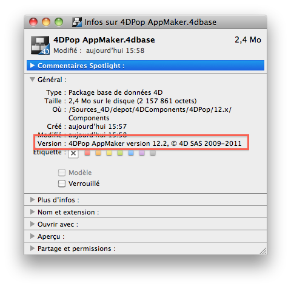

|
|
||||
4DPop AppMaker est un outil d'aide à la génération d'application et/ou de composant. Il permet, après paramétrage, en un seul clic de générer votre application ou votre composant et d'effectuer un certain nombre de tâches fastidieuses et répétitives.
Installation
| 1. | Créez un dossier "Components" à côté du fichier de structure de votre base (".4db") |
| 2. | Placer le dossier "4DPop AppMAker.4dbase"* ou un alias de ce dernier dans le dossier "Components" |
| 3. | Ouvrez votre base. |
| 4. | Si le composant 4DPop est installé un nouveau bouton "AppMaker" se trouve dans la barre d'outils. Il permet de lancer la génération ou d'ouvrir le générateur afin de le paramétrer
|

*Sur Macintosh le composant est un package dont l'extension ".4dbase" n'est pas obligatoirement visible en fonction des réglages de vos préférences d'affichage.
Utilisation
Un simple clic sur le bouton "Appmaker" de la palette 4DPop lance la compilation et la génération de la base courante en prenant en compte les paramètres définis dans le projet courant (le fichier ~/Base.4dbase/Preference/BuildApp/BuildApp.xml).

Si ce raccourci est déjà appréciable, le composant permet également d'automatiser plus de tâches que devons répéter avant et après chaque génération.
L'accès aux paramètres de 4DPop AppMaker se fait par le menu associé au bouton de la palette (déployé par un clic sur la flèche ou un clic long). Ce menu propose deux choix :
- Construire équivalent du clic simple sur le bouton
- Paramètres… qui affiche le dialogue principal du composant dont voici les différentes pages
• La première page permet de lancer la génération lorsque les paramètres ont été modifiés. Il suffit de cliquer sur le gros bouton, l'action est équivalente au clic simple sur le bouton de la palette. |
|
| • La deuxième page permet de modifier les clefs du fichier BuildApp.xml courant.
(~/Base.4dbase/Preference/BuildApp/BuildApp.xml)
Pour chaque clef listée à gauche est présenté sa description dans la partie supérieure droite et les icônes de la ou des plate-forme concernée(s). Si le paramètre a un sens pour la plate-forme courante, il est possible de le modifier dans le panneau inférieur droit qui s'adapte au type de données à renseigner. Si la clef ne concerne pas la plate-forme courante, les données sont affichées mais non modifiables comme le symbolise le cadenas affiché au niveau de la zone d'aide. Les clefs renseignées sont soulignées. Pour supprimer une clef, il faut cliquer dessus en maintenant la touche Option sur Mac (Alt sur PC) enfoncée. Reférence : 4D Clés XML BuildApplication |
 |
• La page "Préparatifs" permet d'indiquer le nom d'une méthode de votre base qui sera exécutée avant la compilation et la génération. Cette méthode doit retourner Vrai pour que le processus de génération puisse continuer. Si la méthode retourne Faux, la génération est annulée. Note : Pensez à déclarer cette méthode "Partagée entre composants et base hôte". Dans le tableau de couples clef/valeur vous déterminez qu'elles informations seront incluses dans le fichier infoplist.strings qui sera généré dans tous les dossiers de langue de votre base. Sur Macintosh, ce fichier est utilisé conjointement au fichier info.plist situé à la racine du package. Ces deux fichiers assurent l'affichage des informations du package.  |
|
| • La page de "Finitions" sert à indiquer les fichiers/dossiers qui seront copiés ou supprimés dans le package après génération par 4D. La génération faite par défaut par 4D copie le fichier "mabase.4DC" et le dossier "resources" mais ignore certains fichier parfois utiles que nous devons intégrer à la main comme le fichier "mabase.htm" pour le fichier d'aide ou bien le dossier "Macros v2" par exemble. De même le dossier "resources" est recopié dans sa totalité. Vous pouvez vouloir supprimer de la version distribué des fichiers ou dossiers qui ne concerne que la version de développement.
Vous pouvez enfin, sur cette page, indiquer le nom d'une méthode de votre base qui sera lancée à la fin du processus de génération. Là encore, pensez à la déclarer "Partagée entre composants et base hôte" |
|
• La dernière page regroupe quelques options :
|

Méthode publiées
Plusieurs méthodes sont publiées par le composant. Ce sont des utilitaires ou des points d'entrés destinés à être utilisés par les méthodes de votre bases qui sont exécutées avant et après la génération.
Elles seront décrites ultérieurement. En voici la liste.
- APP_MAKER_Get_target_path
- AppMaker_DELETE_FOLDER
- AppMaker_DELETE_MAC_CONTENT
- AppMaker_DUPLICATE_FOLDER
- AppMaker_Get_infoPlistKey
- AppMaker_SET_infoPlistKey
- AppMaker_SET_BARBER
- AppMaker_SET_MESSAGE
Note : Il est préférable d'appeler ces méthodes grâce à le commande EXECUTER METHODE afin de pouvoir supprimer le composant 4DPop AppMaker de votre base distribuée.
Code source fourni
Ce composant est fourni en version compilée, mais vous trouverez le code source dans le dossier "SOURCES" à l'intérieur du dossier du composant.